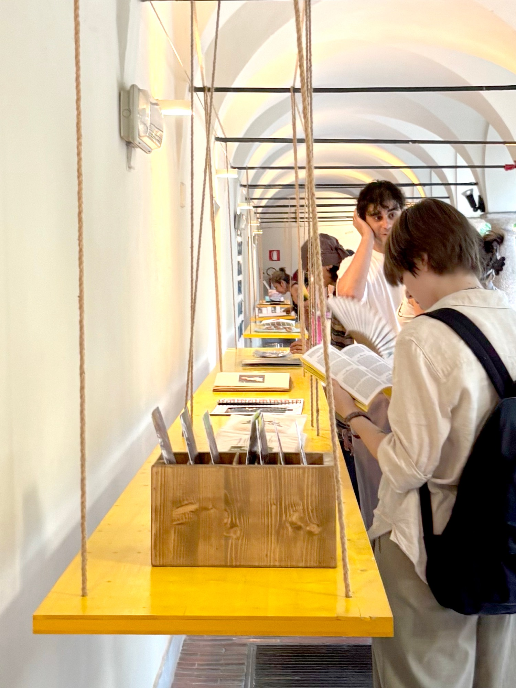
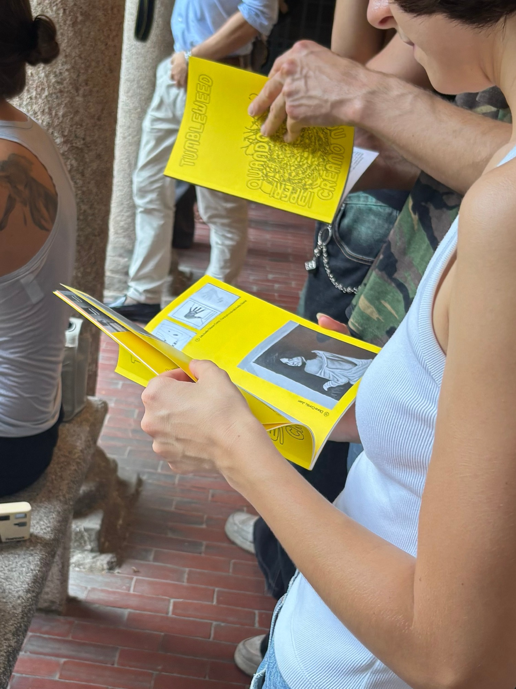
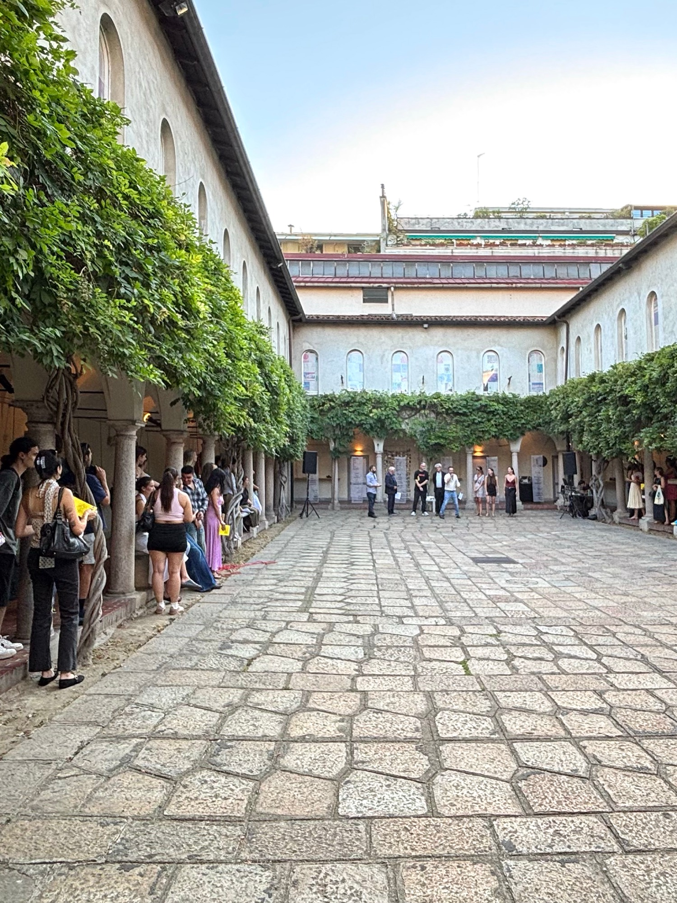

Tumbleweed. Quando le mappe non creano imperi
- Milano, Società Umanitaria
- A cura di Andrea Tinterri e Agata Rubyte
L’archivio è un corpo mobile che interroga il presente, suscettibile alla storia e soprattutto a chiunque gli si avvicini o sprofondi per un’immersione, per un battesimo, per un’ apnea prolungata. Ma l’archivio è anche, soprattutto per le ragioni appena descritte, un laboratorio in cui la memoria può essere risignificata e la storia pretesto per nuove traiettorie. Ed è stato proprio il carattere laboratoriale ad indirizzare le ricerche degli studenti del Triennio in Pittura e Arti Visive di NABA, guidati dai docenti Stefano Boccalini e Stefano Serretta, sulla storia di Società Umanitaria. [continua su umanitaria.it]



Opere esposte:
Artista e Coordinatrice di mostra
Coordinamento delle attività espositive e partecipazione alla mostra come artista.